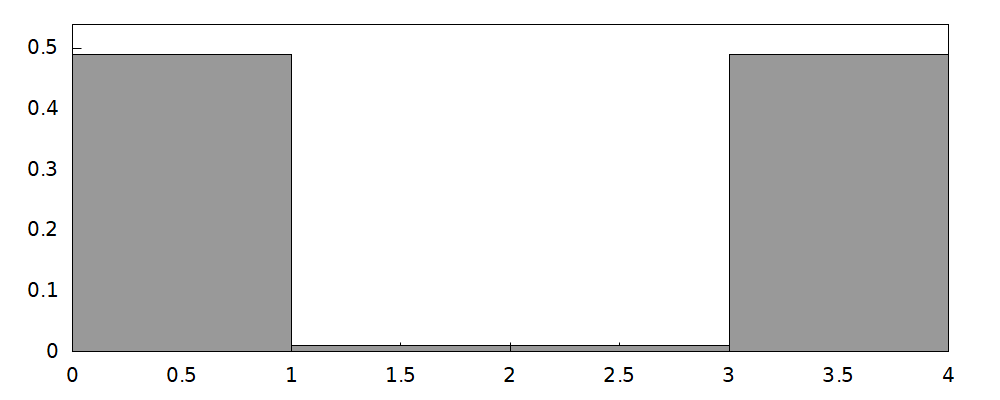
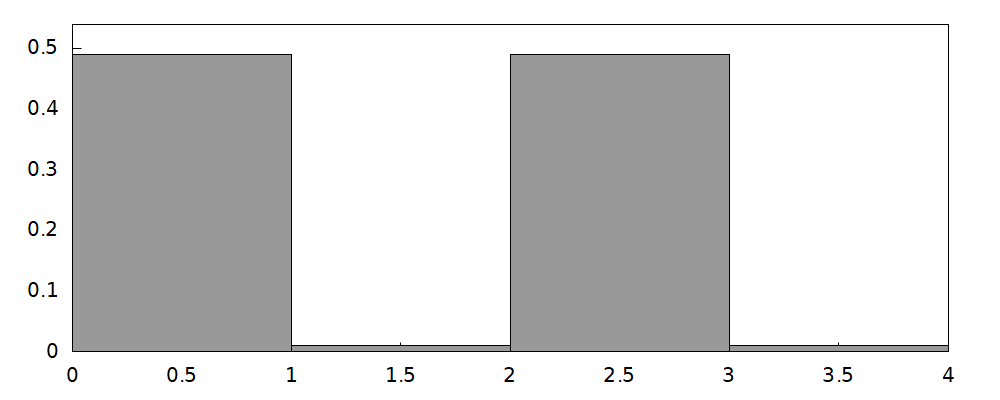
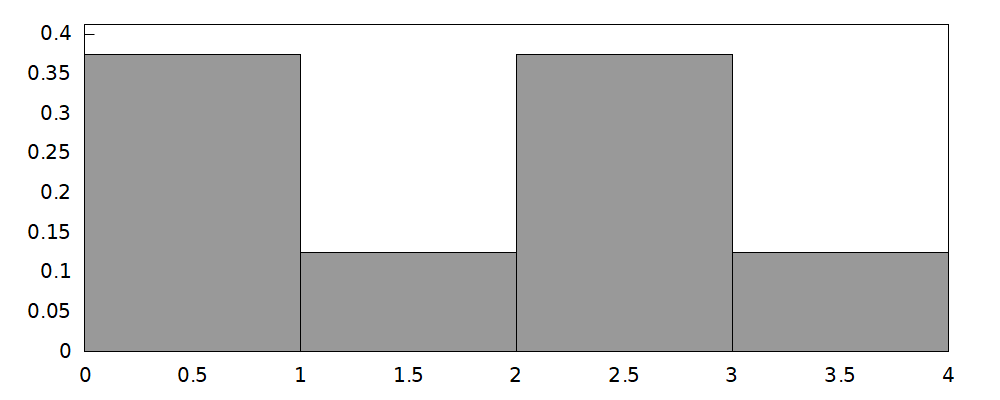

\( \DeclareMathOperator{\abs}{abs} \newcommand{\ensuremath}[1]{\mbox{$#1$}} \)
1 Load OpenQSDS_000
| --> | file_search_maxima : append ( file_search_maxima , [ "/home/quang/Documents/Master_Quantum_Computing/A13_Master_Thesis/*.wxm" ] ) $ |
| --> | batchload ( "OpenQSDS_000-code" ) ; |
\[\operatorname{ }"F:/Actual/QuantumExplore/Plataforma/OpenQSDS/OpenQSDS\_ 000/OpenQSDS\_ 000-code.wxm"\]
2 Quantum error section
2.1 One-qubit errors
| --> | gate_Error ( θ , %pi / 4 , %pi / 4 ) ; |
\[\operatorname{ }\begin{pmatrix}0.7071067811865475 \% i \sin{\left( \theta \right) }+\cos{\left( \theta \right) } & 0.5 \% i \sin{\left( \theta \right) }-0.5 \sin{\left( \theta \right) }\\ 0.5 \% i \sin{\left( \theta \right) }+0.5 \sin{\left( \theta \right) } & \cos{\left( \theta \right) }-0.7071067811865475 \% i \sin{\left( \theta \right) }\end{pmatrix}\]
| --> |
Error_simulation
(
θ
)
:
=
block
(
start_simulator ( 2 ) , apply_1_qubit_gate ( gate_H , 1 ) , apply_1_controlled_1_qubit_gate ( gate_X , 1 , 2 ) , apply_1_qubit_gate ( gate_Error ( θ , %pi / 4 , %pi / 4 ) , 1 ) ) $ |
| --> | Err1 : gate_Error ( %pi / 10 , %pi / 4 , %pi / 4 ) ; |
\[\operatorname{ }\begin{pmatrix}0.2185080122244105 \% i+0.9510565162951535 & 0.1545084971874737 \% i-0.1545084971874737\\ 0.1545084971874737 \% i+0.1545084971874737 & 0.9510565162951535-0.2185080122244105 \% i\end{pmatrix}\]
| --> | start_simulator ( 2 ) $ |
| --> | apply_1_qubit_gate ( gate_H , 1 ) $ apply_1_controlled_1_qubit_gate ( gate_X , 1 , 2 ) $ |
| --> | draw_prob ( "Start" ) ; |
\[\operatorname{ }\]

\[\operatorname{ }"error: none"\]
| --> | Error_simulation ( %pi / 32 ) $ draw_prob ( "Error 1" ) ; |
\[\operatorname{ }\]

\[\operatorname{ }"error: none"\]
| --> | Error_simulation ( %pi / 16 ) $ draw_prob ( "Error 2" ) ; |
\[\operatorname{ }\]
\[\operatorname{ }"error: none"\]
| --> | Error_simulation ( %pi / 8 ) $ draw_prob ( "Error 3" ) ; |
\[\operatorname{ }\]

\[\operatorname{ }"error: none"\]
| --> | Error_simulation ( %pi / 4 ) $ draw_prob ( "Error 4" ) ; |
\[\operatorname{ }\]

\[\operatorname{ }"error: none"\]
| --> | Error_simulation ( %pi / 2 ) $ draw_prob ( "Error 5" ) ; |
\[\operatorname{ }\]

\[\operatorname{ }"error: none"\]
| --> | H ( θ ) : = tensor_prod ( gate_Error ( θ , %pi / 4 , %pi / 4 ) , gate_I ) $ |
| --> | H ( θ ) ; |
\[\operatorname{ }\begin{pmatrix}1.0 \left( 0.7071067811865475 \% i \sin{\left( \theta \right) }+\cos{\left( \theta \right) }\right) & 0.0 & 1.0 \left( 0.5 \% i \sin{\left( \theta \right) }-0.5 \sin{\left( \theta \right) }\right) & 0.0\\ 0.0 & 1.0 \left( 0.7071067811865475 \% i \sin{\left( \theta \right) }+\cos{\left( \theta \right) }\right) & 0.0 & 1.0 \left( 0.5 \% i \sin{\left( \theta \right) }-0.5 \sin{\left( \theta \right) }\right) \\ 1.0 \left( 0.5 \% i \sin{\left( \theta \right) }+0.5 \sin{\left( \theta \right) }\right) & 0.0 & 1.0 \left( \cos{\left( \theta \right) }-0.7071067811865475 \% i \sin{\left( \theta \right) }\right) & 0.0\\ 0.0 & 1.0 \left( 0.5 \% i \sin{\left( \theta \right) }+0.5 \sin{\left( \theta \right) }\right) & 0.0 & 1.0 \left( \cos{\left( \theta \right) }-0.7071067811865475 \% i \sin{\left( \theta \right) }\right) \end{pmatrix}\]
| --> | v0 : matrix ( [ 1 / sqrt ( 2 ) ] , [ 0 ] , [ 0 ] , [ 1 / sqrt ( 2 ) ] ) ; |
\[\operatorname{ }\begin{pmatrix}\frac{1}{\sqrt{2}}\\ 0\\ 0\\ \frac{1}{\sqrt{2}}\end{pmatrix}\]
| --> | v ( θ ) : = H ( θ ) . v0 ; |
\[\operatorname{ }\operatorname{v}\left( \theta \right) \operatorname{:=}\operatorname{H}\left( \theta \right) \ensuremath{\mathrm{ . }}\ensuremath{\mathrm{v0}}\]
| --> | v ( θ ) ; |
\[\operatorname{ }\begin{pmatrix}\frac{1.0 \left( 0.7071067811865475 \% i \sin{\left( \theta \right) }+\cos{\left( \theta \right) }\right) }{\sqrt{2}}\\ \frac{1.0 \left( 0.5 \% i \sin{\left( \theta \right) }-0.5 \sin{\left( \theta \right) }\right) }{\sqrt{2}}\\ \frac{1.0 \left( 0.5 \% i \sin{\left( \theta \right) }+0.5 \sin{\left( \theta \right) }\right) }{\sqrt{2}}\\ \frac{1.0 \left( \cos{\left( \theta \right) }-0.7071067811865475 \% i \sin{\left( \theta \right) }\right) }{\sqrt{2}}\end{pmatrix}\]
| --> | scalar_prod ( v ( θ ) , v0 ) ; |
\[\operatorname{ }1.0 \cos{\left( \theta \right) }\]
| --> | scalar_prod ( v ( θ ) − v0 , v ( θ ) − v0 ) ; |
\[\operatorname{ }0.9999999999999999 {{\sin{\left( \theta \right) }}^{2}}+1.0 {{\cos{\left( \theta \right) }}^{2}}-2.0 \cos{\left( \theta \right) }+1.0\]
2.2 Two-qubit errors
| --> |
Error_simulation_two_qubits
(
θ
)
:
=
block
(
start_simulator ( 2 ) , apply_1_qubit_gate ( gate_H , 1 ) , apply_1_controlled_1_qubit_gate ( gate_X , 1 , 2 ) , apply_1_qubit_gate ( gate_Error ( θ , %pi / 4 , %pi / 4 ) , 1 ) , apply_1_controlled_1_qubit_gate ( gate_X , 1 , 2 ) ) $ |
| --> |
start_simulator
(
2
)
$
apply_1_qubit_gate
(
gate_H
,
1
)
$
apply_1_controlled_1_qubit_gate
(
gate_X
,
1
,
2
)
$
draw_prob ( "Error_2_qubits 0" ) ; |
\[\operatorname{ }\]

\[\operatorname{ }"error: none"\]
| --> | Error_simulation_two_qubits ( %pi / 32 ) $ draw_prob ( "Error_2_qubits 1" ) ; |
\[\operatorname{ }\]

\[\operatorname{ }"error: none"\]
| --> | Error_simulation_two_qubits ( %pi / 16 ) $ draw_prob ( "Error_2_qubits 2" ) ; |
\[\operatorname{ }\]
\[\operatorname{ }"error: none"\]
| --> | Error_simulation_two_qubits ( %pi / 8 ) $ draw_prob ( "Error_2_qubits 3" ) ; |
\[\operatorname{ }\]

\[\operatorname{ }"error: none"\]
| --> | Error_simulation_two_qubits ( %pi / 4 ) $ draw_prob ( "Error_2_qubits 4" ) ; |
\[\operatorname{ }\]
\[\operatorname{ }"error: none"\]
| --> | Error_simulation_two_qubits ( %pi / 2 ) $ draw_prob ( "Error_2_qubits 5" ) ; |
\[\operatorname{ }\]

\[\operatorname{ }"error: none"\]
| --> | H_2_qubits ( θ ) : = matrix ( [ 1 , 0 , 0 , 0 ] , [ 0 , 1 , 0 , 0 ] , [ 0 , 0 , 0 , 1 ] , [ 0 , 0 , 1 , 0 ] ) . tensor_prod ( gate_Error ( θ , %pi / 4 , %pi / 4 ) , gate_I ) $ |
| --> | H_2_qubits ( θ ) ; |
\[\operatorname{ }\begin{pmatrix}1.0 \left( 0.7071067811865475 \% i \sin{\left( \theta \right) }+\cos{\left( \theta \right) }\right) & 0.0 & 1.0 \left( 0.5 \% i \sin{\left( \theta \right) }-0.5 \sin{\left( \theta \right) }\right) & 0.0\\ 0.0 & 1.0 \left( 0.7071067811865475 \% i \sin{\left( \theta \right) }+\cos{\left( \theta \right) }\right) & 0.0 & 1.0 \left( 0.5 \% i \sin{\left( \theta \right) }-0.5 \sin{\left( \theta \right) }\right) \\ 0.0 & 1.0 \left( 0.5 \% i \sin{\left( \theta \right) }+0.5 \sin{\left( \theta \right) }\right) & 0.0 & 1.0 \left( \cos{\left( \theta \right) }-0.7071067811865475 \% i \sin{\left( \theta \right) }\right) \\ 1.0 \left( 0.5 \% i \sin{\left( \theta \right) }+0.5 \sin{\left( \theta \right) }\right) & 0.0 & 1.0 \left( \cos{\left( \theta \right) }-0.7071067811865475 \% i \sin{\left( \theta \right) }\right) & 0.0\end{pmatrix}\]
| --> | v_2_qubits ( θ ) : = H_2_qubits ( θ ) . v0 ; |
\[\operatorname{ }\operatorname{v\_ 2\_ qubits}\left( \theta \right) \operatorname{:=}\operatorname{H\_ 2\_ qubits}\left( \theta \right) \ensuremath{\mathrm{ . }}\ensuremath{\mathrm{v0}}\]
| --> | v_2_qubits ( θ ) ; |
\[\operatorname{ }\begin{pmatrix}\frac{1.0 \left( 0.7071067811865475 \% i \sin{\left( \theta \right) }+\cos{\left( \theta \right) }\right) }{\sqrt{2}}\\ \frac{1.0 \left( 0.5 \% i \sin{\left( \theta \right) }-0.5 \sin{\left( \theta \right) }\right) }{\sqrt{2}}\\ \frac{1.0 \left( \cos{\left( \theta \right) }-0.7071067811865475 \% i \sin{\left( \theta \right) }\right) }{\sqrt{2}}\\ \frac{1.0 \left( 0.5 \% i \sin{\left( \theta \right) }+0.5 \sin{\left( \theta \right) }\right) }{\sqrt{2}}\end{pmatrix}\]
| --> | expand ( scalar_prod ( v_2_qubits ( θ ) , v0 ) · conjugate ( scalar_prod ( v_2_qubits ( θ ) , v0 ) ) ) ; |
\[\operatorname{ }0.4267766952966369 {{\sin{\left( \theta \right) }}^{2}}+0.25 \cos{\left( \theta \right) } \sin{\left( \theta \right) }+0.25 {{\cos{\left( \theta \right) }}^{2}}\]
| --> | float ( 0 . 4267766952966369 − 0 . 25 − ( 1 / ( 4 · sqrt ( 2 ) ) ) ) ; |
\[\operatorname{ }1.110223024625157 {{10}^{-16}}\]
| --> | scalar_prod ( v_2_qubits ( θ ) − v0 , v_2_qubits ( θ ) − v0 ) ; |
\[\operatorname{ }1.0 {{\sin{\left( \theta \right) }}^{2}}-0.5 \sin{\left( \theta \right) }+1.0 {{\cos{\left( \theta \right) }}^{2}}-1.0 \cos{\left( \theta \right) }+1.0\]
Created with wxMaxima.
The source of this Maxima session can be downloaded here.